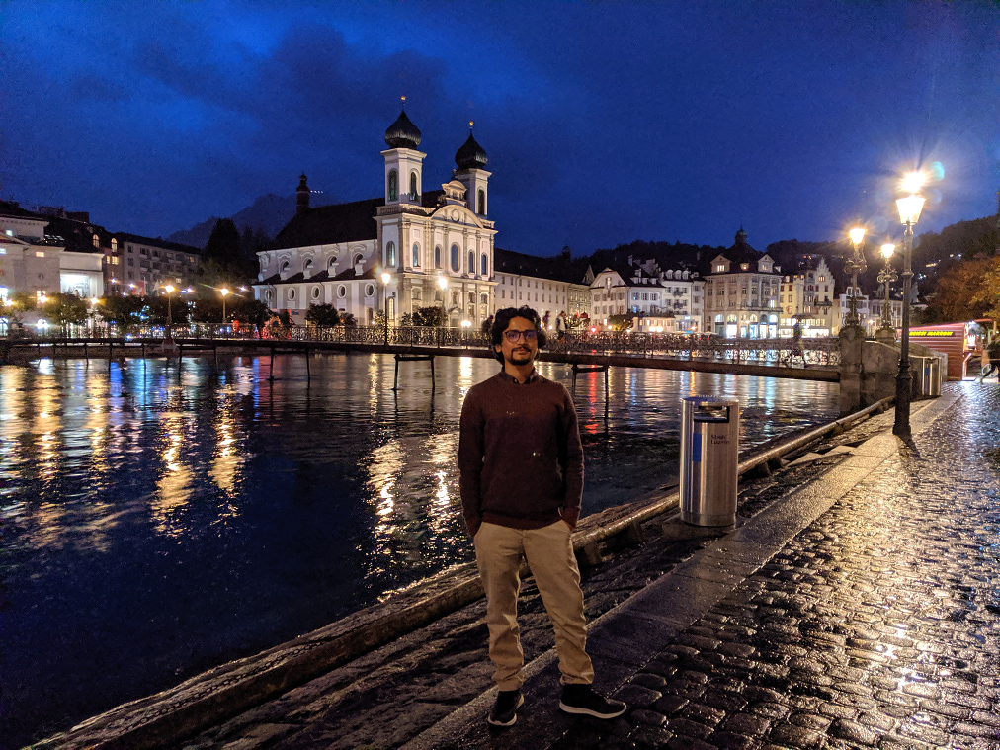
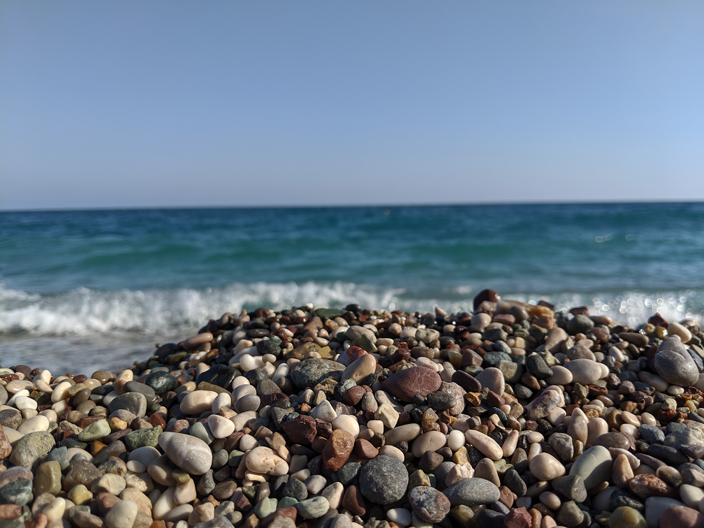

This picture was taken on my business trip to Switzerland.
Lucerne, Switzerland

This is one of the most beautiful cities I have travelled to so far. I loved the vibes of this nicest of places. Design of this city is similar to Chicago to some extent. Reuss River passes through the city just the way Chicago River passes through this city."
Konyalti Beach, Turkey

This picture was taken by me while enjoying beautiful and colorful vibes of Mediterranean sea at Konyalti beach in Antalya Turkey
Saugatuck Dune
I visited this beautiful, scenic place of Saugatuck along Lake Michigan in Michigan state. I visited this tourist town of Saugatck, its Dune Park and enjoyed swimming in Lake Michigan at Oval Beach